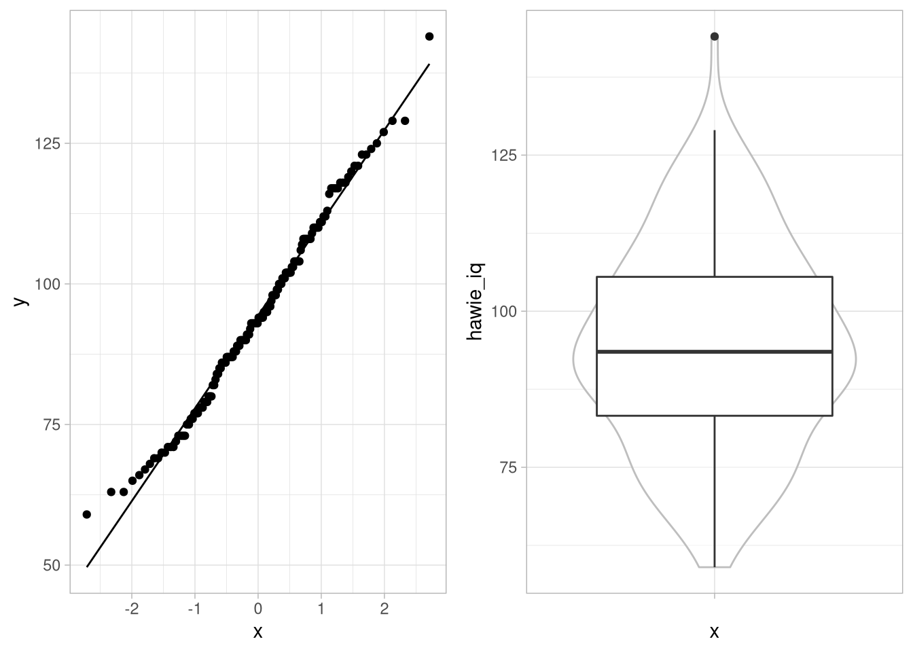
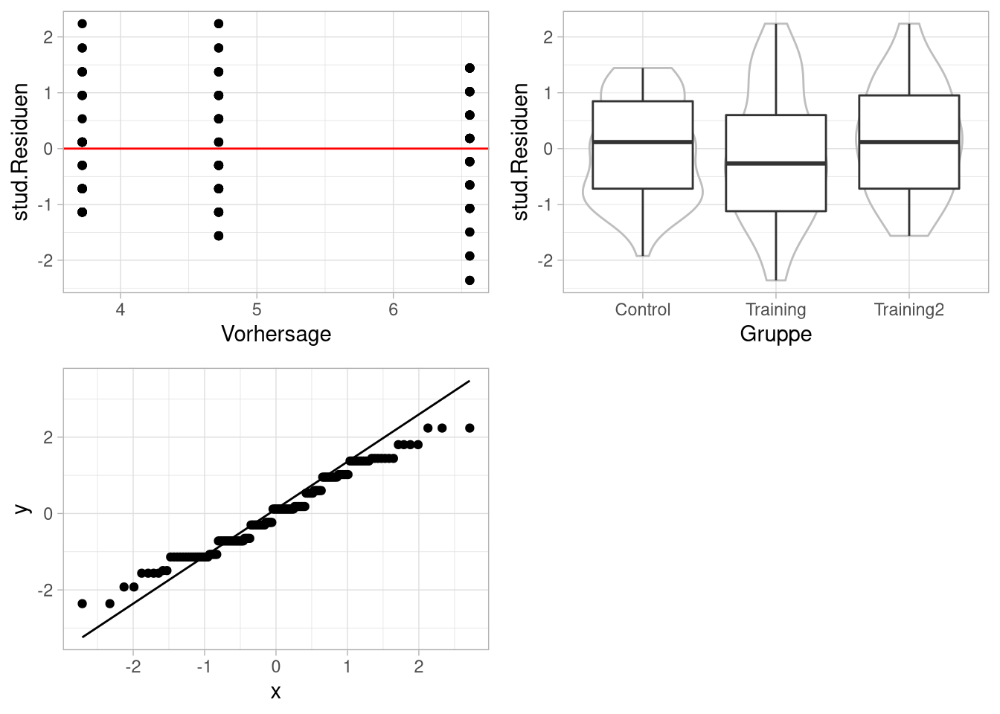

Gruppenunterschiede I
Organisatorisches
Semesterplan
| Einheit | Vorlesung | Übungswoche | Thema |
|---|---|---|---|
| 1 | 23.04.21 | keine Übung | Deskriptive Statistik |
| Data Cleaning | |||
| 2 | 07.05.21 | KW 19 | Hilfsmittel für die Inferenzstatistik |
| Lineare Regression I | |||
| 3 | 21.05.21 | KW 21 | Lineare Regression II |
| 4 | 04.06.21 | KW 23 | t- Tests |
| einfaktorielle Varianzanalyse | |||
| 5 | 18.06.21 | KW 25 | zweifaktorielle Varianzanalyse |
| 6 | 02.07.21 | KW 27 | Kontrasttests |
Datensatz
Wir verwenden den (leicht erweiterten), simulierten Datensatz aus den letzten Wochen:
| Variable | Inhalt |
|---|---|
vp_nr
|
VP-Nummer |
group
|
Treatment-Gruppe |
sex
|
Geschlecht |
hawie_iq
|
Intelligenz-Quotient aus HAWIE |
hawie_wahr_log
|
Skalenwert wahrnehmungsgebundenes logisches Denken aus HAWIE |
pre_skill
|
motorischer Skill vor dem Treatment |
post_skill
|
motorischer Skill nach dem Treatment |
t-Test
Ein-Stichproben-Problem
Beim Ein-Stichproben-t-Test wird der Erwartungswert einer Stichprobe gegen den bekannten Erwartungswert einer Population getestet.(\(\text{H}_0: \mu = \mu_0\))
Der Test setzt eigentlich voraus, dass die abhängige Variable normalverteilt ist. Wenn die Stichprobe groß genug ist, um eine näherungsweise Normalverteilung des Mittelwertes zu gewährleisten, kann man die \(t\)-Statistik aber ohne viele Probleme mit der entsprechenden \(t\)-Verteilung (\(t_{n-1}\)) verglichen werden.
t.test(x=<Vektor>, alternative=c("two.sided", "less", "greater"), mu=0)muH0 <- 100
(tResults <- t.test(df_wide$hawie_iq, alternative="two.sided", mu=muH0))##
## One Sample t-test
##
## data: df_wide$hawie_iq
## t = -4.132, df = 149, p-value = 5.976e-05
## alternative hypothesis: true mean is not equal to 100
## 95 percent confidence interval:
## 91.76135 97.09199
## sample estimates:
## mean of x
## 94.42667Zwei-Stichproben-Problem, abhängiger Fall
Beim abhängigen Zwei-Stichproben-Fall wird im Prinzip derselbe Test durchgeführt, nur dass hier die Differenzwerte der Beobachtungen als Stichprobe genutzt werden. Da die Frage hier nicht ist, ob der Erwartungswert einer Population einem spezifischen Erwartungswert gleich ist, sondern ob sich die Erwartungswerte der jeweiligen Beobachtungen unterscheiden, ist die Nullhypothese hier: \[\text{H}_0: { \mu}_D = { \mu}_1 - { \mu}_2= 0 \]
Die Teststatistik ist hier auch \(t_{n-1}\)-verteilt. Dabei steht das \(n\) hier aber für die Anzahl der Beobachtungs-Paare, nicht die Gesamtzahl der Beobachtungen.
t.test(x=df_wide$pre_skill,
y=df_wide$post_skill,
alternative="two.sided", paired=TRUE)##
## Paired t-test
##
## data: df_wide$pre_skill and df_wide$post_skill
## t = 0.9628, df = 149, p-value = 0.3372
## alternative hypothesis: true difference in means is not equal to 0
## 95 percent confidence interval:
## -0.2946581 0.8546581
## sample estimates:
## mean of the differences
## 0.28Geht auch für das long-Format und in Formel-Schreibweise:
df_wide %>%
pivot_longer(cols = c(pre_skill,post_skill),
names_to = 'time',
values_to = 'skill') %>%
t.test(skill ~ time, data=.,
alternative = 'less', paired=T)##
## Paired t-test
##
## data: skill by time
## t = -0.9628, df = 149, p-value = 0.1686
## alternative hypothesis: true difference in means is less than 0
## 95 percent confidence interval:
## -Inf 0.2013441
## sample estimates:
## mean of the differences
## -0.28Und genau wie bei den Regressionsanalysen können wir auch hier wieder broom benutzen, um eine übersichtliche Tabelle zu erhalten:
df_wide %$%
t.test(x=pre_skill,
y=post_skill,
alternative="two.sided",
paired=TRUE) %>%
broom::tidy()| estimate | statistic | p.value | parameter | conf.low | conf.high | method | alternative |
|---|---|---|---|---|---|---|---|
| 0.28 | 0.963 | 0.337 | 149 | -0.295 | 0.855 | Paired t-test | two.sided |
Aufgabe
## [1] "t = -0.9628, df = 149, p-value = 0.1686"Wie interpretieren wir das Ergebnis?
Die Skillwerte zwischen Pre- und Post-Zeitpunkt sind nicht unterschiedlich.
Wir verwerfen die \(\text{H}_0\) und nehmen an, dass die Skillwerte der Population sich zu den zwei Zeitpunkten unterschieden.
Wir können die \(H_0\) nicht verwerfen.
Weil wir unabhängige Testzeitpunkte haben, ist das der falsche Test, das Ergebnis ist also tendenziell zu liberal.
Antwort
1 ist eine Interpretation der \(H_0\), 2 wäre richtig wäre der Test signifikant, 4 ist ein möchtegern-schlauer Distraktor.
Richtig ist 3.Zwei-Stichproben-Problem, unabhängiger Fall
Beim unabhängigen Stichproben t-Test wird getestet, ob die Erwartungswerte zweier Stichproben unterschiedlich sind (\(H_0: {\mu}_1 = {\mu}_2\)). Dabei wird vorausgesetzt, dass die abhängige Variable in beiden Gruppen normalverteilt ist und dieselbe Varianz hat. Gelten diese Voraussetzungen, ist die \(t\)-Statistik unter der \(H_0\) \(t_{n_1 + n_2 - 2}\)-verteilt.
t.test(x=<Vektor>, y=<Vektor>, paired=FALSE,
alternative=c("two.sided", "less", "greater"))Auch als Formelschreibweise:
df_wide %>%
t.test(post_skill ~ sex, data=.,
alternative="less", paired=FALSE,var.equal=TRUE)##
## Two Sample t-test
##
## data: post_skill by sex
## t = -1.7207, df = 148, p-value = 0.0437
## alternative hypothesis: true difference in means between group f and group m is less than 0
## 95 percent confidence interval:
## -Inf -0.02840063
## sample estimates:
## mean in group f mean in group m
## 4.626667 5.373333Ungleiche Varianzen (oder Stichprobengrößen)
Im Falle einer Varianzinhomogenität ist die t-Statistik nicht mehr gut mit der \(t_{n_1 + n_2 - 2}\)-Verteilung zu vergleichen. Die Welch-Korrektur kann in diesem Fall dazu dienen, eine Anzahl von Freiheitsgraden zu schätzen, die besser zu der Verteilung unter der \(H_0\) der Teststatistik passt.
Mit dem var.equal-Argument lässt sich logisch angeben, ob die Freiheitsgrade nach Welch geschätzt werden sollen. Dabei ist FALSE der Standard.
df_wide %>%
t.test(post_skill ~ sex, data=.,
alternative="less", paired=FALSE,var.equal=F)##
## Welch Two Sample t-test
##
## data: post_skill by sex
## t = -1.7207, df = 145.74, p-value = 0.04372
## alternative hypothesis: true difference in means between group f and group m is less than 0
## 95 percent confidence interval:
## -Inf -0.02833062
## sample estimates:
## mean in group f mean in group m
## 4.626667 5.373333Test von Voraussetzungen
Obwohl t-Tests relativ robust gegen Verletzungen der Normalverteilungsvoraussetzung sind, kann man auf die Idee kommen, auf die Normalverteiltheit der AV zu testen Außerdem kann für den Zwei-Stichproben-Test überlegt werden, ob die Varianzhomogenität überprüft werden soll, um über das genutzte Verfahren zu entscheiden.
Test auf Normalverteilung
Der Kolmogorov-Smirnov-Test auf eine feste Verteilung vergleicht die kumulierten relativen Häufigkeiten von Daten einer stetigen Variable mit einer frei wählbaren Verteilungsfunktion – etwa der einer bestimmten Normalverteilung. Hier wird er aber nur der Vollständigkeit halber erwähnt, da er stark abhängig von der Stichprobengröße schnell zu suboptimalen Handlungen führen kann.
ks.test(x=<Vektor> , y="<Name der Verteilungsfunktion>",
alternative=c("two.sided", "less", "greater"))ks.test(df_wide$hawie_iq, 'pnorm', 100, 15, alternative='two.sided')##
## One-sample Kolmogorov-Smirnov test
##
## data: df_wide$hawie_iq
## D = 0.19056, p-value = 3.715e-05
## alternative hypothesis: two-sidedBei kleinem N kann der Shapiro-Wilk-Test auf unspezifische Normalverteilung bessere Ergebnisse liefern, bei großem N hat dieser aber dasselbe Problem wie der KS-Test, und wird eigentlich immer signifikant.
shapiro.test(df_wide$hawie_iq)##
## Shapiro-Wilk normality test
##
## data: df_wide$hawie_iq
## W = 0.99, p-value = 0.3654Außerdem möglich sind grafisch-heuristische Testvarianten:

Aufgabe
Was ist daran falsch?
Nichts, alle diese Verfahren können so angewendet werden
Verfahren zum Testen von Verteilungsvoraussetzungen sind absurd! die Verfahren, die wir meistens benutzen, sind gegen alle Verletzungen der Voraussetzungen robust!
Über alle Gruppen hinweg einen Test auf Normalverteilung durchzuführen ist nicht sinnvoll.
Grafiken sind deutlich weniger aussagekräftig als inferenzstatistische Tests, die haben hier nichts zu suchen.
Antwort
- ist falsch, die Av über die Zellen zu poolen, ergibt keinen Sinn.
- könnte man argumentieren, bei sehr extremen Verletzungen oder der Verletzung mehrerer Voraussetzungen gleichzeitig kann man aber in Schwierigkeiten kommen
- ist richtig, siehe 1.
- sehe ich nicht so. Grafisch-heuristische Tests haben ihren heuristischen Entscheidungsanteil wenigstens im Namen.
Test auf Varianzhomogenität
Varianzhomogenität lässt sich mit dem Levene-Test testen, einem Signifikanz-Test, der auf Abweichungen von der Varianzhomogenität in zwei oder mehr Populationen testet. Im Prinzip wird die absolute Abweichung jedes Wertes einer Gruppe vom Zentrum dieser Gruppe berechnet. Über die resultierenden Werte wird dann eine Varianzanalyse gerechnet.
Dafür kann in R die Funktion leveneTest() aus dem car-Paket verwendet werden. Dabei testet der Standard nicht die von Levene ursprünglich aufgestellte Differenz zum Mittelwert, sondern die Version von Brown und Forsythe, bei der die Differenz zum Median gebildet wird.
Levene-Test für einen Faktor
library(car)
df_wide %>%
leveneTest(hawie_iq ~ sex, data=.)| Df | F value | Pr(>F) |
|---|---|---|
| 1 | 0.341 | 0.56 |
| 148 |
Levene-Test für mehr als einen Faktor
Mit Verknüpfung zweier Faktoren als Interaktion im Modellterm wird der Test als assoziierte einfaktorielle Varianzanalyse ausgeführt.
df_wide %>%
leveneTest(hawie_iq ~ group * sex, data=.)| Df | F value | Pr(>F) |
|---|---|---|
| 5 | 0.489 | 0.784 |
| 144 |
Varianzanalyse - ein unabhängiger Faktor
Ein unabhängiger Faktor
Bei der einfaktoriellen, unabhängigen Varianzanalyse testen wir eine Variable in einer Reihe von Bedingungen darauf, ob die jeweiligen Erwartungswerte unterschiedlich sind. Bei Gültigkeit der \(\text{H}_0: {\mu}_1 = {\mu}_2 \ldots = {\mu}_J\), sowie Unabhängigkeit, Normalverteiltheit und gleicher Varianz der AV in allen Bedingungen ist die Teststatistik \(F_{J-1, N-J}\)-verteilt.
Für Varianzanalysen gibt es eine ganze Reihe von Paketen und Funktionen, base-R hat alleine drei, die man für diesen Zweck nutzen kann.
Für die bessere Integration in den tidyverse-workflow werden wir hier aber die Funktionen aus dem ez-Paket nutzen.
ezANOVA(data = <data>,
dv = <AV>,
wid = <VP-Code>,
between = <UV>)Als Beispiel sollen die Werte der zentralen Leistungs-AV zum ersten Messzeitpunkt in der follow-up Phase zwischen den Gruppen verglichen werden.
library(ez)
anova_group <-
df_wide %>%
ezANOVA(dv = post_skill,
wid = vp_nr,
between = group)Ergebnis des Tests:
anova_group## $ANOVA
## Effect DFn DFd F p p<.05
## 1 group 2 147 17.76712 1.227478e-07 *
## ges
## 1 0.1946717
##
## $`Levene's Test for Homogeneity of Variance`
## DFn DFd SSn SSd F p p<.05
## 1 2 147 2.773333 326.8 0.6237454 0.5373457Der Output besteht aus den Ergebnistabellen für zwei inferenzstatistische Tests. Zum einen ist da das Ergebnis eines Levene-Tests:
anova_group$`Levene's Test for Homogeneity of Variance`| DFn | DFd | SSn | SSd | F | p | p<.05 |
|---|---|---|---|---|---|---|
| 2 | 147 | 2.77 | 327 | 0.624 | 0.537 |
Mit
- Zähler- und Nennerfreiheitsgraden
- den entsprechenden Quadratsummen
- dem F-Wert
- dem entsprechenden p-Wert und einer Signifikanzaussage
Zum Anderen dem Ergebnis der eigentlichen Varianzanalyse:
anova_group$`ANOVA`| Effect | DFn | DFd | F | p | p<.05 | ges |
|---|---|---|---|---|---|---|
| group | 2 | 147 | 17.8 | 1.23e-07 | * | 0.195 |
Mit
- einer Angabe des Effekts, für den die Ergebnisse berichtet werden
- Zähler- und Nennerfreiheitsgraden
- den entsprechenden Quadratsummen
- dem F-Wert
- dem entsprechenden p-Wert und einer Signifikanzaussage
- einem Schätzer für die Effektstärke \(\eta^2\)
Aufgabe
| Effect | DFn | DFd | F | p | p<.05 | ges |
|---|---|---|---|---|---|---|
| group | 2 | 147 | 17.8 | 1.23e-07 | * | 0.195 |
Wie interpretieren wir das Ergebnis?
Es gibt keinen Unterschied zwischen den Gruppen.
Der Test ist signifikant, deswegen nehmen wir an, dass die Interventionen zu größerem Skill führen.
Der Test ist nicht signifikant, deswegen können wir keine Aussage treffen. Mit dem mittleren Effekt können wir aber mit G*Power eine Stichprobengröße ausrechnen, die zu Signifikanz führen würde.
Der Test ist signifikant, deswegen entscheiden wir uns die Alternativhypothese anzunehmen, dass die Interventionen und die Kontrollgruppe sich in ihren Skill-Werten unterscheiden.
Antwort
ist falsch, der Test ist signifikant
ist falsch, da eine Richtung mit-formuliert ist und wir ungerichtet getestet haben
ist falsch da zum Einen der Test signifikant ist und zum Anderen so Power nicht funktioniert
ist richtig
Grafisch Voraussetzungen prüfen
Die Voraussetzungen der Varianzanalyse lassen sich zu folgender Aussage umformulieren:
Die Fehler müssen unabhängige, normalverteilte Variablen mit Erwartungswert 0 und gleicher Streuung sein.
Diese umformulierten Anforderungen lassen sich dann wieder wie bei der Regressionsanalyse grafisch-heuristisch untersuchen.
Damit wir die bekannten Funktionen zur Standardisierung der Fehler nutzen können, müssen wir aber noch das return_aov-Argument auf TRUE setzen.
aov-Modelle sind die base-R Version, Ergebnisse von Varianzanalysen in einem ähnlichen Format wie die von linearen Modellen abzuspeichern.
anova_group <- df_wide %>%
ezANOVA(dv = post_skill,
wid = vp_nr,
between = group,
return_aov = T)
anova_group$aov## Call:
## aov(formula = formula(aov_formula), data = data)
##
## Terms:
## group Residuals
## Sum of Squares 207.52 858.48
## Deg. of Freedom 2 147
##
## Residual standard error: 2.416609
## Estimated effects may be unbalanced
Paarvergleiche mit t-Tests und \(\alpha\)-Adjustierung
Besteht nach einer ANOVA die Frage, bei welchen Paaren Erwartungswertunterschiede vorliegen, können t-Tests durchgeführt werden, um die Unterschiede jeweils zweier Gruppen auf Signifikanz zu prüfen.
with(df_wide, pairwise.t.test(post_skill, group,
p.adjust.method="bonferroni", paired=F, pool.sd=T))##
## Pairwise comparisons using t tests with pooled SD
##
## data: post_skill and group
##
## Control Training
## Training 0.12089 -
## Training2 0.00062 8.1e-08
##
## P value adjustment method: bonferroniDas p.adjust.method-Argument übernimmt eine relativ große Zahl von Korrekturen:
"holm", "hochberg", "hommel", "bonferroni", "BH", "BY", "fdr", "none"